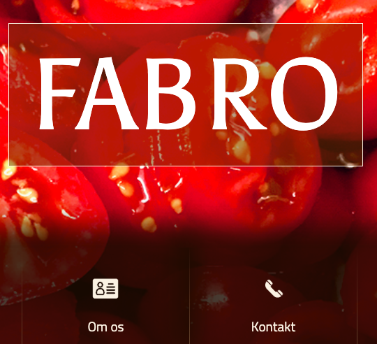
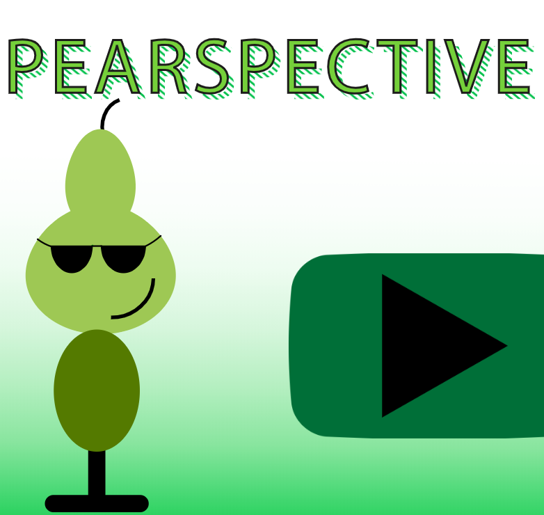

Projects
Fabro
Redesign case
På den här uppgiften gick vi ihop i en grupp och hade ett case där vi skulle göra en redesign på företagets hemsida. Vi hade även en intervju med en av ägarna till restaurangen.
Responsive web
Det här var faktiskt en av dom första grejerna vi provade på. Först skulle vi arbeta i en grupp om ett ämne, sen skulle man till slut få fram en XD prototype, efter det en fungerande hemsida som skulle vara responsive.
Pearspective
Animations tema
På det här tema så skulle vi gå igång med javascript. Vi började dock med en massa skitser och illustrator arbete innan vi gick igång med kodningen. Här lärde man sig framför allt illustrator och även javascript, en god blandning av det hela.
Kea galleri

UX tema
Under detta tema gick vi ihop i grupper och här skulle vi komma på ett projekt som skulle användas av kea och gynna alla studenter som går här. Det som framför allt va väldigt intressant här var hur man jobbade med design sprint. På fem dagar får man fram en prototype som man kan testa. Väldigt effektivt skulle jag vilja påstå.